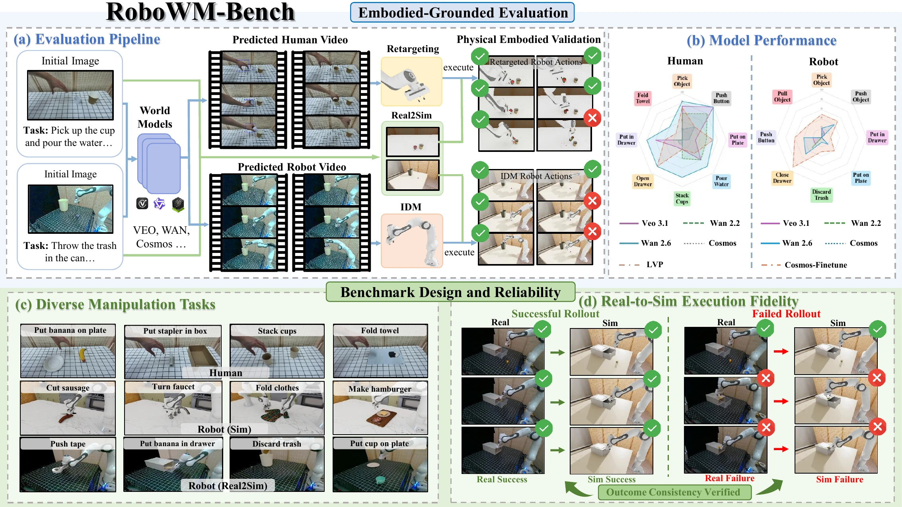
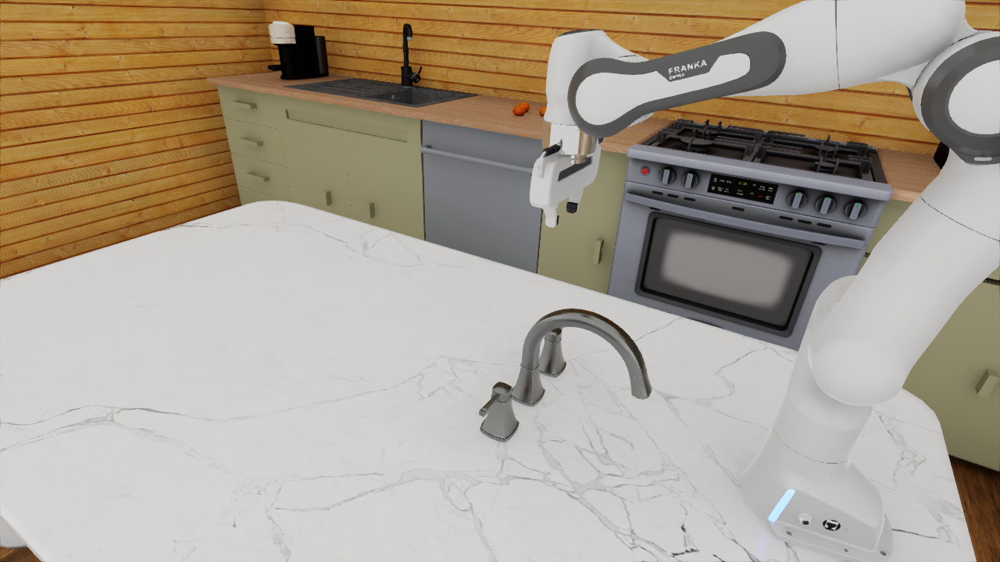
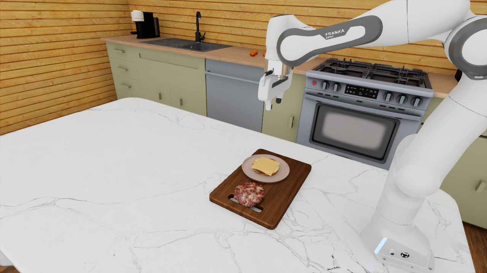
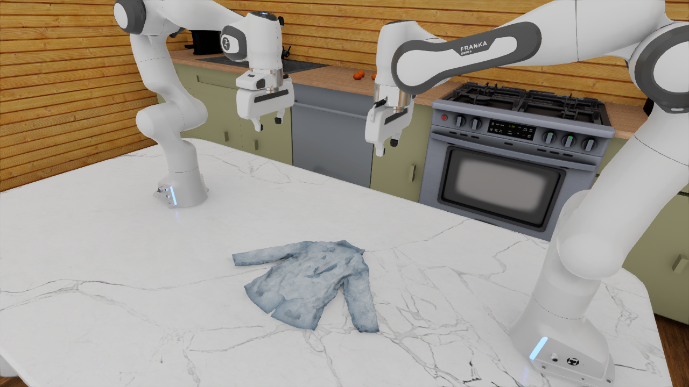

Pose tracking and retargeting
3D hand poses are reconstructed from generated videos. Contact-relevant hand geometry determines end-effector position, orientation, and gripper opening before smoothing and temporal denoising.
A Benchmark for Evaluating World Models in Robotic Manipulation

RoboWM-Bench at a glance. Predicted human-hand and robotic manipulation videos are converted into executable actions, validated in simulation, and assessed at step and task levels across diverse manipulation settings.
Recent advances in large-scale video world models have enabled increasingly realistic future prediction, raising the prospect of using generated videos as scalable supervision for robot learning. However, for embodied manipulation, perceptual realism alone is not sufficient: generated interactions must also be physically consistent and executable by robotic agents. Existing benchmarks provide valuable assessments of visual quality and physical plausibility, but they do not systematically evaluate whether predicted behaviors can be translated into executable actions that complete manipulation tasks.
We introduce RoboWM-Bench, a manipulation-centric benchmark for embodiment-grounded evaluation of video world models. RoboWM-Bench converts generated human-hand and robotic manipulation videos into embodied action sequences and validates them through execution in physically grounded simulation environments. Built on real-to-sim scene reconstruction and diverse manipulation tasks, it enables standardized, reproducible, and scalable evaluation of physical executability.
Experiments reveal that visual plausibility and embodied executability are not always aligned. Recurring factors include spatial reasoning, contact prediction, and non-physical geometric distortions, particularly in complex and long-horizon interactions.
RoboWM-Bench turns predicted visual behavior into a measurable execution outcome. Human-centric videos are processed through 3D hand-pose estimation and retargeting; robot-centric videos are translated to joint-space actions with an inverse dynamics model.
3D hand poses are reconstructed from generated videos. Contact-relevant hand geometry determines end-effector position, orientation, and gripper opening before smoothing and temporal denoising.
An IDM predicts intermediate joint-space action chunks from consecutive frames. Simulation pretraining supplies dense action supervision and real trajectories adapt the model to real observations.
Step-level checkers expose where a rollout fails, while task-level success measures whether the complete manipulation objective is achieved.
| Method | Pick Object | Push Button | Put on Plate | Pour Water | Stack Cups | Open Drawer | Put in Drawer | Fold Towel |
|---|---|---|---|---|---|---|---|---|
| Cosmos | 23% | 40% | 15% | 0% | 10% | 10% | 10% | 0% |
| Wan 2.2 | 57% | 80% | 55% | 60% | 40% | 0% | 20% | 0% |
| Veo 3.1 | 73% | 100% | 30% | 60% | 20% | 20% | 60% | 0% |
| Wan 2.6 | 83% | 100% | 70% | 80% | 80% | 80% | 80% | 40% |
| LVP | 70% | 40% | 70% | 40% | 20% | 80% | 40% | 20% |
| Method | Close Drawer | Pick Object | Push Object | Push Button | Put on Plate | Discard Trash | Pull Object | Put in Drawer |
|---|---|---|---|---|---|---|---|---|
| Cosmos | 0% | 10% | 10% | 10% | 10% | 0% | 0% | 0% |
| Wan 2.2 | 30% | 10% | 0% | 0% | 0% | 0% | 0% | 0% |
| Veo 3.1 | 20% | 20% | 10% | 20% | 10% | 0% | 0% | 0% |
| Wan 2.6 | 50% | 20% | 40% | 40% | 20% | 10% | 0% | 0% |
| Cosmos-FT | 90% | 50% | 50% | 60% | 40% | 30% | 40% | 20% |
| Method | Put on Plate | Put in Drawer | ||||||
|---|---|---|---|---|---|---|---|---|
| Contact | Lift | Place | Contact | Lift | Above | In | Close | |
| Cosmos | 90% | 20% | 15% | 80% | 20% | 20% | 20% | 10% |
| Wan 2.2 | 100% | 60% | 55% | 100% | 60% | 60% | 40% | 20% |
| Veo 3.1 | 100% | 70% | 30% | 100% | 70% | 70% | 60% | 60% |
| Wan 2.6 | 100% | 75% | 70% | 100% | 80% | 80% | 80% | 80% |
| LVP | 100% | 75% | 70% | 100% | 70% | 60% | 50% | 40% |
| Method | Put on Plate | Put in Drawer | ||||||
|---|---|---|---|---|---|---|---|---|
| Contact | Lift | Place | Contact | Lift | Above | In | Close | |
| Cosmos | 30% | 10% | 10% | 10% | 0% | 0% | 0% | 0% |
| Wan 2.2 | 20% | 0% | 0% | 0% | 0% | 0% | 0% | 0% |
| Veo 3.1 | 40% | 10% | 10% | 30% | 0% | 0% | 0% | 0% |
| Wan 2.6 | 40% | 20% | 20% | 30% | 0% | 0% | 0% | 0% |
| Cosmos-FT | 60% | 40% | 40% | 60% | 20% | 20% | 20% | 20% |
The same generated videos receive near-saturated PAI-Bench domain scores, while execution outcomes remain strongly differentiated. Embodiment-grounded validation exposes failures that perceptual scoring can miss.
Identical trajectories preserve their task outcome when replayed in reconstructed simulation environments across seven real-world manipulation tasks.
| Interface | Pick | Stack / Pull | Pour / Push | Open / Discard | Fold / Close | Plate | Drawer | Average |
|---|---|---|---|---|---|---|---|---|
| Human retargeting | 100% | 90% | 90% | 100% | 100% | 100% | 100% | 97.1% |
| IDM, real only | 70% | 70% | 80% | 70% | 90% | 70% | 50% | 71.4% |
| IDM, sim + real | 100% | 90% | 100% | 90% | 100% | 100% | 90% | 95.7% |
Human and robotic task columns represent their corresponding matched task groups. Simulation pretraining materially improves IDM replay accuracy before real-domain adaptation.
Additional tasks probe articulated, deformable, and long-horizon manipulation entirely in simulation. Performance drops sharply as tasks require sustained contact and multiple coordinated stages.
| Method | Close Drawer | Push Button | Cut Sausage | Turn Off Faucet | Assemble Burger | Fold Clothes |
|---|---|---|---|---|---|---|
| Cosmos | 0% | 10% | 10% | 0% | 0% | 0% |
| Wan 2.2 | 10% | 10% | 10% | 0% | 0% | 0% |
| Wan 2.6 | 30% | 20% | 40% | 0% | 0% | 0% |
| Veo 3.1 | 10% | 20% | 20% | 0% | 0% | 0% |



Cook and Lift Large Box test coordinated two-hand manipulation. Wan 2.6 achieves the strongest task-level success, reaching 50% and 60%, respectively.
| Method | Task | Grasp spatula | Grasp pan | Contact |
|---|---|---|---|---|
| Cosmos | 10% | 30% | 20% | 20% |
| Wan 2.2 | 30% | 70% | 60% | 30% |
| Wan 2.6 | 50% | 90% | 70% | 60% |
| Veo 3.1 | 40% | 80% | 70% | 60% |
| LVP | 30% | 80% | 70% | 40% |
| Method | Task | Grasp left | Grasp right | Lift | Place |
|---|---|---|---|---|---|
| Cosmos | 10% | 20% | 20% | 10% | 10% |
| Wan 2.2 | 30% | 70% | 60% | 30% | 30% |
| Wan 2.6 | 60% | 90% | 90% | 70% | 60% |
| Veo 3.1 | 50% | 80% | 80% | 50% | 50% |
| LVP | 30% | 70% | 70% | 30% | 30% |
More predicted videos and their corresponding embodied executions expose errors in grasp formation, object localization, contact persistence, and robot geometry.
Direct monocular absolute depth differs substantially from ground truth. Aligning relative depth to the first-frame ground-truth depth improves temporal consistency but remains imperfect, motivating the geometry-based retargeting design used in the benchmark.
Qwen3-VL-Flash produces concise task-specific descriptions from the initial observation and high-level task instruction. Human prompts additionally require a fully visible hand, a static camera, no unnecessary gestures, and stationary non-target objects.
Separate human and robot question sets evaluate task completion, contact, structural integrity, object deformation, and implausible motion. The task-specific question changes by scenario; the four physical-consistency questions remain fixed.
Every model receives the same initial configurations, task descriptions, random seeds, and evaluation protocol. Each main task is evaluated over ten object configurations.